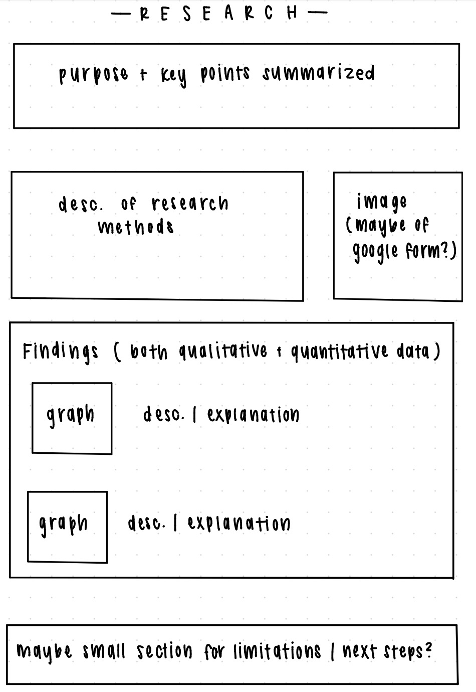
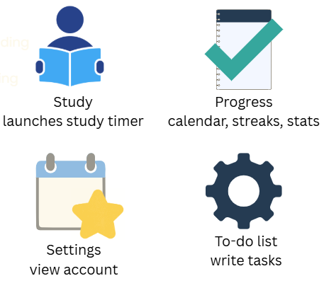
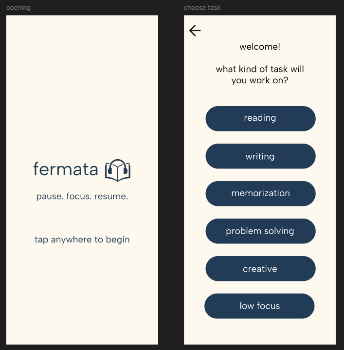
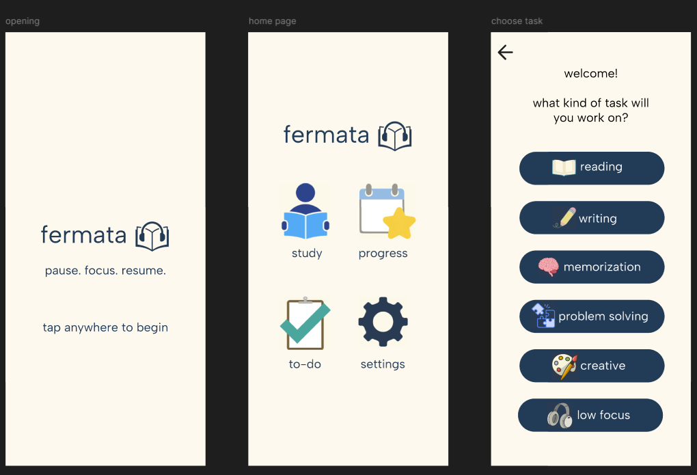
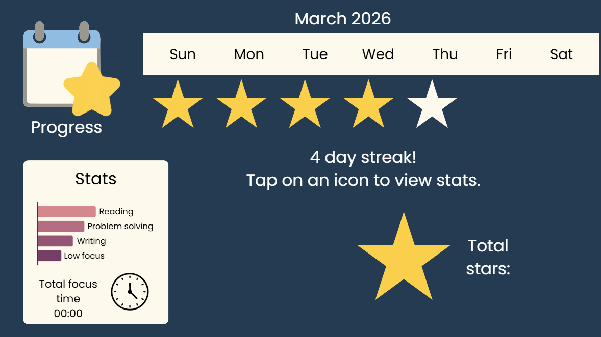
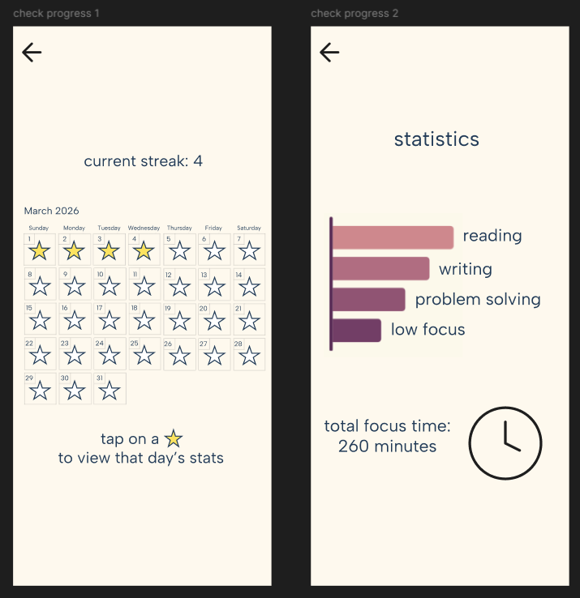

how we designed fermata to support focused study sessions.
when designing fermata, our goal was to create a simple and calming interface that would reduce distractions while studying. since the app focuses on concentration and music-assisted studying, we prioritized clarity, minimalism, and quick task selection.

early in the design process, we explored which features would best support focused study sessions. we brainstormed several core tools that would help users structure their study time.

our early interface focused on helping users quickly choose the type of task they were working on. this allowed the app to generate a music playlist that best matched the cognitive demands of the activity.
we designed a simple onboarding flow where users first select their task type (reading, writing, memorization, problem solving, etc.) before starting a study session.

after feedback and iteration, we simplified the navigation by adding clear icons for the main features of the app. this allowed users to easily switch between study sessions, progress tracking, and task management.

to help users stay motivated, we implemented a visual progress tracking system. the calendar interface allows students to see their study streaks and review statistics about their focus sessions.
visual rewards like stars and streaks encourage consistent study habits and reinforce positive behavior.

the statistics screen allows users to see how they spend their study time across different task types such as reading, writing, and problem solving.
this helps students better understand their study habits and encourages more intentional focus sessions.
